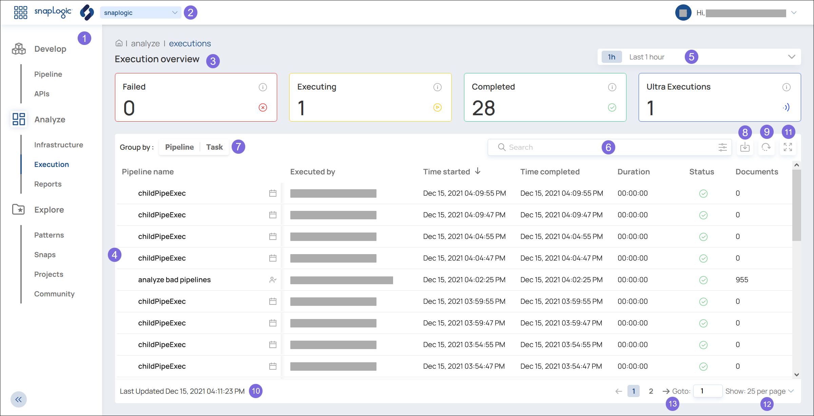

BETA | Analyze: Execution Overview
How to use the Execution Overview.
In the Execution Overview, you can see information about running Executions and completed Executions of Pipelines and Tasks at a glance.

- Choose the SnapLogic Studio feature from the left navigation.
- To expand the navigation panel, click .
- To collapse the navigation panel, click .
- Choose your Org from the dropdown.
- The Execution overview cards display the number of Pipeline and Task Executions that match the filter.
- Failed — The number of Executions that failed.
- Executing — The number of Executions that are currently running.
- Completed — The number of Executions that have successfully completed.
- Ultra Executions — The number of Ultra Executions that were started, including failed runs and successful runs.
- The table displays the list of Pipeline and Task Executions that match the filter.
- To view more details about a specific Execution, click the row of the Execution to view. Learn more: Execution Detail
- To sort the table, click the column header for the field to sort by.
- Filter the list of Executions by time or date.
- The last hour
- The last 8 hours
- The last 24 hours
- A specific calendar date
- Filter the list of Executions by search criteria.
- Search by any string or conditional expression.
- Click
 :
:
- To define an advanced search based on a number of fields.
- To select which columns are displayed.
- Group the results based on the Pipeline or the Task. If both are deselected, the list is not grouped.
- Export the current result list into a local CSV file.
- Refresh the list to pick up any changes since the last update of the list.
- View the time that the list was last refreshed.
- Expand the list and hide the Execution Overview cards. Or collapse the list and show the cards.
- Change the number of items displayed in each page.
- Switch to the previous page, the next page, or a specific page number.